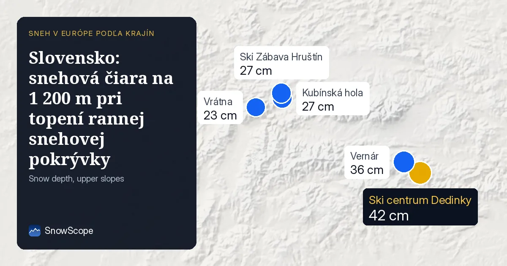

Slovensko: snehová čiara na 1 200 m pri topení rannej snehovej pokrývky
Lyžiarske strediska na Slovensku sú stále v úvodnom boji o sneh. Dnes má merateľnú pokrývku len 34 zo 107 stredísk, pričom snehová čiara udržiava 1 200 m, keďže teplejší vzduch tlačí belu hranu nahor do kopca.
Pozrite si predpoveď snehu pre Ski centrum Dedinky v aplikácii SnowScopeVýška snehu, upozornenia a 3D mapa, zadarmo.
Kde je zem biela
Satelitný snímok dnes ukazuje mierne zmenšenie snehovej pokrývky: 1 830 km2 lyžiarskeho terénu na Slovensku je biele, o 190 km2 menej ako včera. Snehová čiara sa nachádza na 1 200 m, čo znamená, že musíte vyliezť nad túto výšku, aby ste našli spoľahlivú pokrývku. Pod 1 200 m je sneh na 3 až 39 percent pôdy, podľa konkrétneho sklonu a orientácie.
Nad 1 500 m sa obrázok výrazne mení. Na výške 1 500 až 2 000 m dosahuje priemerná hĺbka 9 cm a sneh pokrýva 99 percent pôdy. Ešte vyššie, medzi 2 000 a 2 500 m, dosahuje priemerná hĺbka 17 cm s úplnou pokrývkou. To znamená, že Vysoké Tatry a Nízke Tatry – obe vyššie pohorií – majú najlepší a najtrvalejší sneh.
| Stredisko | Výška snehu | Nový sneh, 72 h | Ďalšie dni | Vrchol |
|---|---|---|---|---|
| Ski centrum Dedinky | 42 cm | 1 cm | 0 cm | 871 m |
| Vernár | 36 cm | 1 cm | 0 cm | 1 001 m |
| Kubínská hola | 27 cm | 3 cm | 3 cm | 1 390 m |
| Ski Zábava Hruštín | 27 cm | 3 cm | 2 cm | 1 141 m |
| Vrátna | 23 cm | 7 cm | 9 cm | 1 529 m |

Vrstvy a ich význam
Rozdelenie údajov podľa výškovej vrstvy ukazuje výrazný kontrast. Od 500 do 1 000 m je sneh takmer neprítomný: priemerná hĺbka je nula a len 3 percent pôdy je biele. Na výške 1 000 až 1 500 m hĺbka vzrastá na priemerne 1 cm, ale 39 percent svahov stále ukazuje holú pôdu. Táto vrstva je zmiešaná zóna, kde majú veľký vplyv orientácia a lokálne počasie.
Skok od 1 500 m nahor rozpráva iný príbeh. Na výške 1 500 až 2 000 m sú prakticky všetky svahy pokryté a hĺbka dosahuje 9 cm. Nad 2 000 m sa snehová pokrývka zhrúbi na 17 cm. Ak plánujete lyžovať v nasledujúcich dňoch, zameraním sa na výšku nad 1 500 m budete mať najlepšie šance na konzistentné lyžovanie.

Nový sneh za posledné tri dni
Celkový úhrn za 72 hodín ukazuje skutočnú aktivitu v vysokých horách. Vysoké Tatry a Nízke Tatry zaznamenali v posledných troch dňoch po 8 cm, zatiaľ čo Malá Fatra videla 7 cm. Sú to najsnehové zóny v súčasnosti. Len 280 km2 lyžiarskeho terénu na Slovensku nazbieralo aspoň 5 cm nového snehu v tomto období, takže čerstvý sneh je sústredený vo vyšších severných pohoriach.
Strediska, ktoré vedú dnes
Ski centrum Dedinky drží najhlbšiu vrstvu na 42 cm, hoci je situované nižšie na 871 m a je v marginálnej zóne pre pokrývku. Vernár, tiež nisko na 1 001 m, drží 36 cm, ale v nasledujúcich troch dňoch očakáva málo nového snehu. Príbeh sa mení, keď sa pozriete na nárast nadmorskej výšky a budúci potenciál. Vrátna, na 1 529 m, ukazuje dnes 23 cm s 7 cm nového snehu za 72 hodín a prognózou 9 cm v nasledujúcich troch dňoch. Kubínská hola, na 1 390 m, sa opiera o 27 cm a mala by získať 3 cm v nasledujúcich troch dňoch. Tieto vyššie strediska sa zhodujú s realitou snehovej čiary a ponúkajú väčšiu stabilitu, keď sa sezóna vyvíja.
Čo príde
V nasledujúcich troch dňoch padne na Slovensku maximálne 7 cm nového snehu. 23. november je najsnehový deň v prognóze, s očakávanými 4 cm. Ak sa pozriete o sedem dní dopredu, je možných až 12 cm. Podľa zimných štandardov je to skromné, ale pomôže to posunúť snehovú čiaru vyššie a prehĺbť pokrývku nad 1 500 m. Sneh padajúci na vyššie svahy zlepší situáciu, najmä v Tatrách.
Regionálny obraz
Susedné Poľsko sleduje podobne na 11 percentach bielej pokrývky, s líderom Karpaczom na 44 cm a až 13 cm možných za sedem dní. Česko zaostáva na pouhých 1 percente pokrývky, s líderom Ramzovou na 22 cm. Slovensko je medzi nimi. Začiatok sezóny je vždy neurčitý – kamene a tenké miesta sa skrývajú pod novým snehom a teplé epizódy môžu rýchlo vymazať zisky. Používajte našu aplikáciu na sledovanie hĺbky a pokrývky minútu po minúte vo vašom zvolenom stredisku. Skôr než lyžujete mimo tratí, skontrolujte oficiálny lavinový bulletin, najmä na strmých terénoch, kde sa čerstvý sneh možno dobre nepridŕži k starej podloženej vrstve.
Tipy pre lyžiarov
- Lyžujte nad 1 500 m pre najspoľahlivejšiu hĺbku snehu a pokrývku. Strediska ako Vrátna a Kubínská hola, obe nad 1 390 m, budú najviac profitovať z príchodzajúceho snehu.
- Pozorujte Vysoké Tatry a Nízke Tatry: vedú s najnovšou akumuláciou a najväčšou nadmorskou výškou. Plánujte svoje výjazdy do týchto pohôria v nasledujúcom týždni.
- Očakávajte premenlivé podmienky pod 1 200 m. Sneh z úvodu sezóny je tenký a páchanský; kamene sa môžu objaviť. Zostávajte na označených zjazdovkách a skontrolujte si so strediskom bezpečné trasy.
- Prognóza prinesie 7 cm za tri dni a 12 cm za sedem dní. To stačí na zdvihnutie snehovej čiary a prehĺbenie vysokohorskej pokrývky, ale nie na transformáciu sezóny za jeden týždeň.
- Pred vydaním sa mimo tratí si pozrite oficiálny lavinový bulletin. Čerstvý sneh na tenkoj podložke, najmä na strmých svahoch, sa možno bezpečne neudrží.
About these numbers
Resort snow depths are the deepest snow on the resort's upper slopes from the SnowScope snow model (about 1 km, run of 17. novembra); they are estimates for an area, not a measurement at one point. Station values are measurements on the date shown. Forecasts can change. Always read the official avalanche bulletin before going off-piste.
Cite this report
For research, teaching or the press: the numbers and charts are free to reuse under CC BY 4.0 with this citation.
SnowScope (2026), Slovensko: snehová čiara na 1 200 m pri topení rannej snehovej pokrývky, https://snowscope.app/blog/sk/2026/11/slovakia-snow-report-17-november-2026.html, accessed 2026-11-17
SnowScope (Atlas Labs). (2026, November 17). Slovensko: snehová čiara na 1 200 m pri topení rannej snehovej pokrývky. SnowScope snow reports. https://snowscope.app/blog/sk/2026/11/slovakia-snow-report-17-november-2026.html
BibTeX
@misc{snowscope2026slovakiasnowreport17nove,
author = {{SnowScope (Atlas Labs)}},
title = {Slovensko: snehová čiara na 1 200 m pri topení rannej snehovej pokrývky},
year = {2026},
month = nov,
howpublished = {\url{https://snowscope.app/blog/sk/2026/11/slovakia-snow-report-17-november-2026.html}},
note = {Published 2026-11-17 12:53 UTC; accessed 2026-11-17}
}· CC BY 4.0 · Methods, data and tools →
Ski centrum Dedinky: snow and temperature by height, this winter vs last (tools) →
Follow Ski centrum Dedinky
Zadarmo: správa, keď prichádza nový sneh, a predpoveď každé ráno.